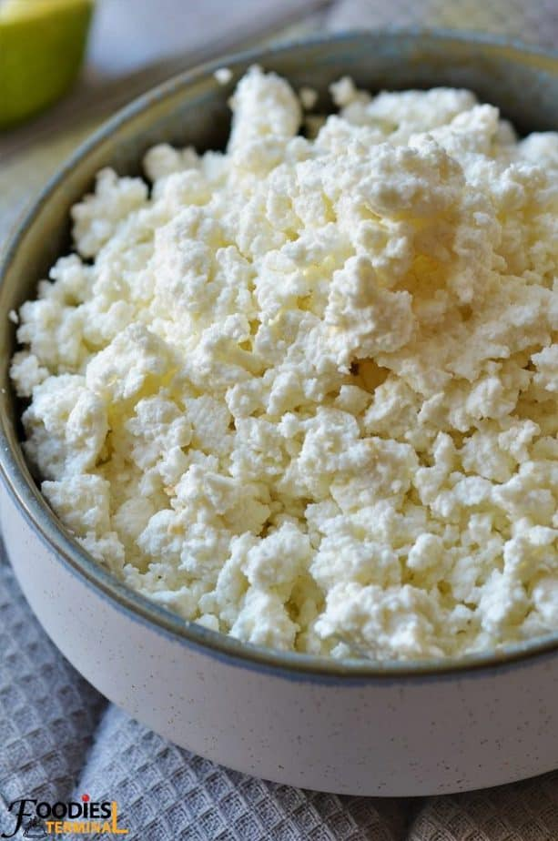
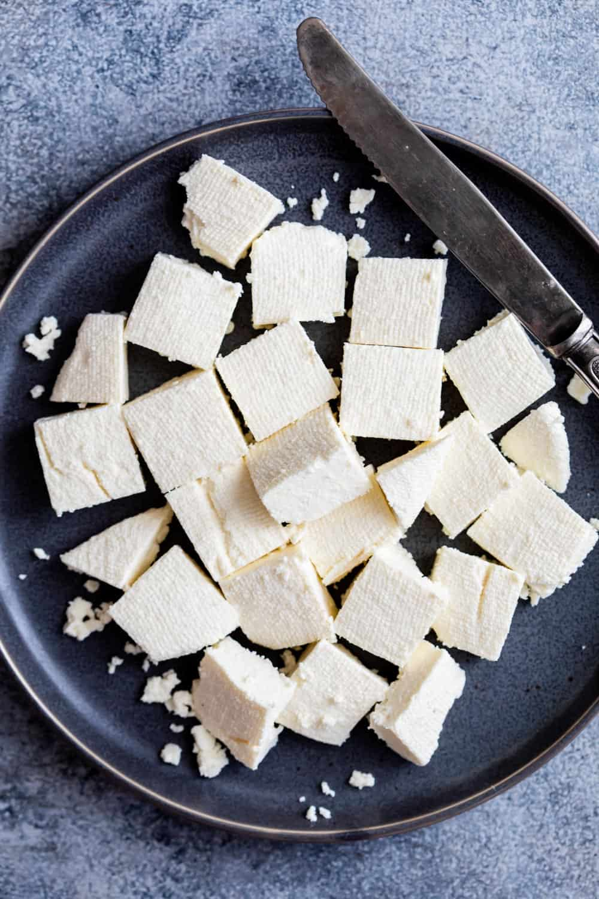

Chenna
Before we make Paneer, we first have to make Chenna.
This recipe will make about 9oz of chenna.

Ingredients
- 1 Half-Gallon of Whole Milk
- 2-4 TBSP of lemon juice
Directions
- Pour the milk into a large pot. Cook on high heat, stirring frequently.
- When the milk begins to boil, turn off heat and add lemon juice. If seperation
does not occurr within 10-20 seconds, add additional lemon juice as needed.
- Once the chenna starts to seperate from the whey, turn head to low and stir gently
until the whey is translucent and yellowish.
- Strain the Chenna through either a cheesecloth or a fine mesh strainer. Set aside until cool.
Paneer
Now that we have Chenna, we can make Paneer.

Directions
No additional ingredients are needed, simply take the chenna and form it into a flat
square. Place a moderate weight ontop of it (filling the previously used pot with
water and setting it on top is a good methood.) for 30-60 minutes. A longer press
time will make the paneer more firm.